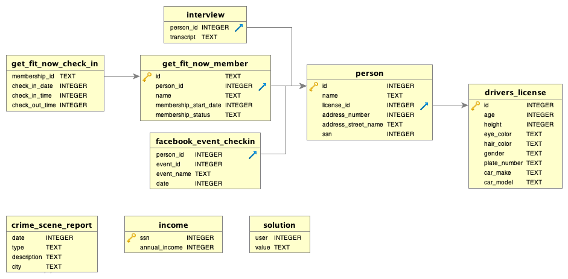

🔎 SQL Murder Mystery 🔎
Can you find out whodunnit ?
[image non reprise dans cette copie]
Le projet SQL Murder Mystery a été créé par Joon Park et Cathy He lors de leurs travaux au Knight Lab de l'université américaine Northwerstern University. Il a été adapté et dévéloppé pour le Web par Joe Germuska pour en faire un exercice en ligne permettant de travailler la langage SQL.
Vous trouverez plus d'informations sur le dépôt GitHub du projet.
Pour résoudre le meurtre, vous pouvez :
- le faire directement dans ce notebook SQL sur Capytale : la base de données
sql-murder-mystery.dbest attachée à ce notebook- le faire en ligne à l'adresse : https://mystery.knightlab.com/
- le faire en local (avec DB Browser for SQLite par exemple) en téléchargeant la base de données
sql-murder-mystery.dbattachée à ce notebook (ou en la téléchargeant sur le dépôt GitHub du projet en cliquant ici )
📖 Énoncé original¶
Voici l'énoncé original :
A crime has taken place and the detective needs your help. The detective gave you the crime scene report, but you somehow lost it. You vaguely remember that the crime was a murder that occurred sometime on Jan.15, 2018 and that it took place in SQL City. Start by retrieving the corresponding crime scene report from the police department’s database.
Le schéma de la base de données est le suivant :

✍️ Travail demandé¶
Vous rédigerez un rapport directement dans ce notebook dans lequel vous détaillerez les différentes étapes de votre investigation qui mènera je l'espère à l'identification du coupable :
- les différentes idées (dans des cellules de texte type Markdown ou Texte Brut)
- les requêtes SQL effectuées (dans des cellules de code, qui acceptent uniquement le langage SQL)
- les déductions que vous faites des résultats renvoyés par les requêtes (dans des cellules de texte type Markdown ou Texte Brut)
Par exemple, pour récupérer tous les enregistrements de la table crime_scene_report, on écrit la requête :
SELECT * FROM crime_scene_report;
🕵️♀️ À vous de trouver le coupable ! 🕵️¶
Rédigez ci-dessous les différentes étapes de votre investigation. Ajoutez autant de cellule de texte et de code que nécessaire. Vous pourrez vérifier votre réponse un peu plus bas !
Vérifiez votre réponse¶
Avez-vous trouvé le tueur ?
INSERT INTO solution VALUES (1, 'Insérer le nom de la personne que vous avez trouvée ici');
SELECT value FROM solution;
Références :
- Projet GitHub : https://github.com/NUKnightLab/sql-mysteries
- Version Web : http://mystery.knightlab.com/
Germain Becker, Lycée Emmanuel Mounier, ANGERS. Licence CC BY-SA 4.0